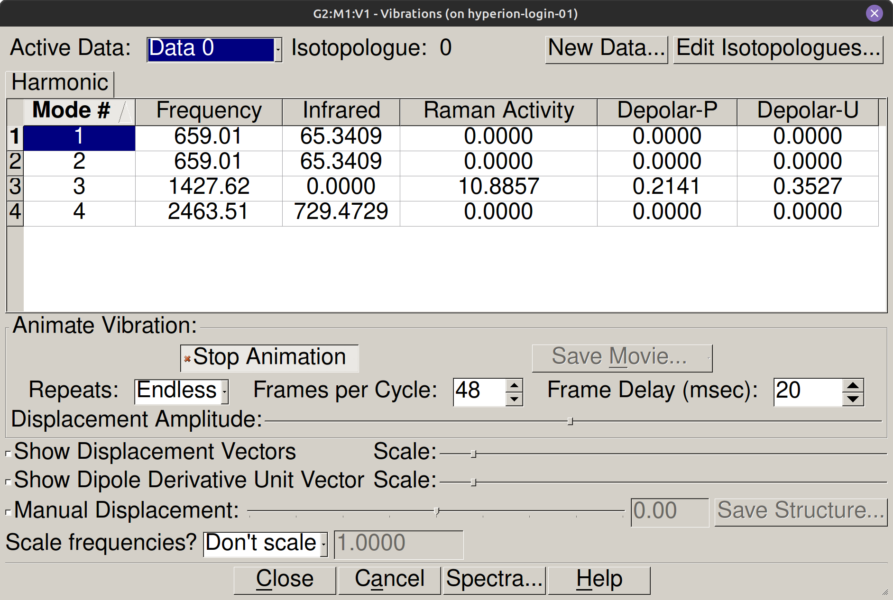
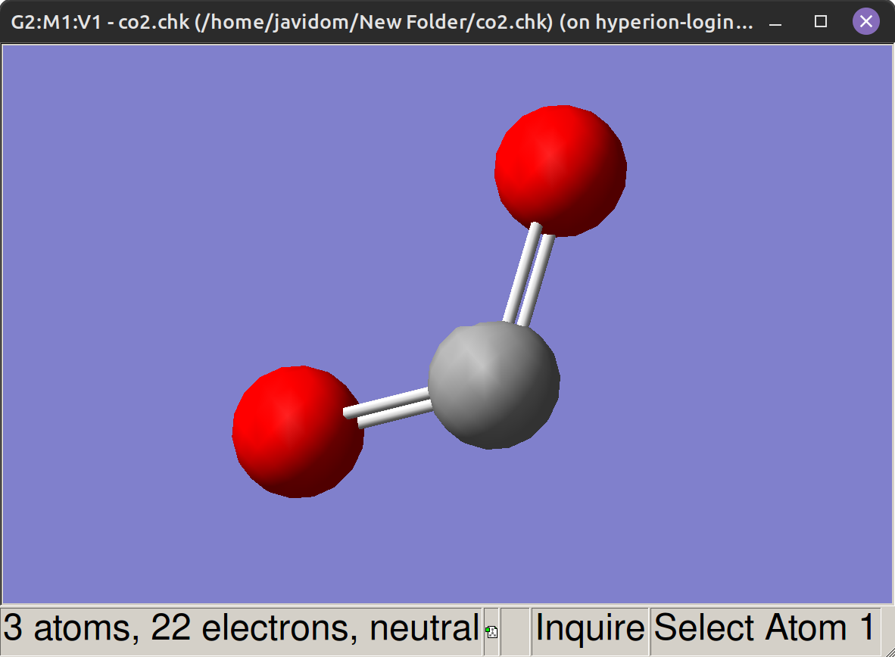

Bibrazio-modu normalak#
Sarrera#
Infragorri erradiazioaren xurgapena eremu elektromagnetikoaren eta bibrazio nuklearren arteko elkarrekintzaren ondorioz sortzen da. Fenomeno hau modelizatzeko, Gaussianek energia potentzialaren hessiar matrizea diagonalizatzen du, eta horrek mugimendu molekularra oszilazio harmoniko independenteetan deskonposatzen du. Ondoriozko modu normalen analisiak maiztasun teorikoak ematen ditu, atomoen desplazamenduak GaussView-n bistaratzeko aukera ematen du eta infragorri espektroan duten jarduera zehazten du, simetria molekularraren arauen arabera.
Helburuak#
Molekula linealen bibrazio-askatasun maila independenteak kalkulatu (\(\text{CO}\) eta \(\text{CO}_2\)).
Molekula-geometria optimizatu eta maiztasun harmonikoak kalkulatu
Opt+Freqmetodo konbinatua erabiliz B3LYP/6-311G-rekin.Luzatze- eta toleste-moduei dagozkien atomoen desplazamenduak bistaratu eta sailkatu GaussView-ko animazioen bidez.
Infragorri espektroko jarduera ebaluatu, dipolo molekularraren aldaketa (\(\partial \vec{\mu}/\partial Q\)) eta kalkulatutako intentsitatearen balioa (
IR Inten) egiaztatuz.Maiztasun harmoniko teorikoak esperimentalki neurtutako xurgapen-bandekin alderatu, anharmonizitatearen eragina kuantifikatzeko.
Kontzeptu gakoak#
Molekulek bibratzen dute: osziladore harmonikoaren eredua#
Hurbilketa harmonikoan, nukleoak oreka-geometriaren inguruan oszilatzen dute, osziladore mekaniko baten antzera. Zenbat eta lotura zurrunagoa izan (indar-konstante handiagoa \(k\)) eta zenbat eta masa txikiagoa izan (\(\mu\)), orduan eta handiagoa da bibrazioaren maiztasuna:
Bi atomoz osatutako molekula baterako, \(m_1\) eta \(m_2\) masak dituena, masa txikitua honela definitzen da:
Gaussianek indar-konstanteak kalkulatzen ditu energia nuklearren desplazamenduekiko bigarren deribatuak kalkulatuz PESaren minimoan.
Oharra
Gaussianek indar-konstanteak kalkulatzen ditu energia potentzialaren bigarren deribatuak kalkulatuz nuklearren desplazamenduekiko (hessiar matrizea) geometria optimizatuan. Hurbilketa honek Taylorren seriearen garapena termino koadratikoan mozten du eta potentzial harmoniko ideal bat suposatzen du. Lotura molekular errealak anharmonizitatea aurkezten dutenez nukleoarteko distantzia handiagoetan, kalkulatutako maiztasunak esperimentalki neurtutakoak baino handiagoak izan ohi dira.
Modu normalak eta bibrazio-askatasun mailak#
Modu normal bakoitzean, molekularen nukleo guztiak fasean eta maiztasun berezi batean oszilatzen dute. Masen zentroaren translazio-askatasun mailak (3) eta errotazio-askatasun mailak (2 molekula linealen kasuan eta 3 ez-linealen kasuan) kenduta, \(N\) atomoentzako bibrazio oinarrizko posibleen kopurua honela ematen da:
Hessiarren diagonalizazioak masa haztatuko koordenatuetan zuzenean ematen ditu maiztasun hauek eta modu bakoitzari lotutako nukleo-desplazamendu bektoreak.
Hautapen-arauak infragorri espektroskopian#
Bibrazio-modu batek infragorri erradiazioa xurgatzen du soilik nukleo-mugimenduak dipolo molekularraren aldaketa garbi bat eragiten badu orekaren inguruan:
Molekula simetrikoetan, modu batzuek inbertsio-simetria mantentzen dute bibrazioan zehar eta ez dute dipoloa aldatzen: IRn aktibo ez diren moduak dira. Muturreko kasuan, \(\text{H}_2\) molekulak ez du IR banda aktiborik: bere dipolo iraunkorra nulua da eta luzatze-bibrazioak ez du aldatzen, beraz, infragorri espektroa guztiz isila da. .log fitxategian, modu bakoitzaren jarduera IR Inten eremuan jasotzen da: balio nulu batek ez-aktibitatea adierazten du.
Oharra
Infragorri erradiazioaren xurgapenak bibrazio-mugimenduak dipolo molekularra aldatzea eskatzen du (\(\partial \vec{\mu}/\partial Q \neq 0\)). \(\text{CO}_2\)-ren luzatze simetrikoan, inbertsio-simetria mantentzen da eta dipoloaren aldaketa garbia nulua da, beraz, modua ez da akoplatzen eremu elektromagnetiko intzidentearekin. .log fitxategian, ez-aktibitate hau infragorri intentsitatearen balioarekin (IR Inten) 0.0000 adierazten da.
Baldintza operatiboa: aurretiko geometria optimizazioa#
Maiztasunen kalkuluak eskatzen du hasierako geometria PESaren benetako minimoa izatea, deribatu partzialak puntu egonkor batean bakarrik baitute esanahi fisikoa. Geometria optimizatuta ez badago, hessianaren autobalio batzuk negatiboak dira eta maiztasun irudikariak agertzen dira .log atalean, bibrazio-interpretagarritasun baliodunik gabe.
Abisua
Ezinbestekoa da geometria optimizatzea maiztasunak kalkulatu aurretik. Estazioarioak ez diren geometrien gaineko kalkuluak esanahi fisikorik gabeko maiztasun irudikariak sortzen ditu. Praktika honetan, Opt+Freq aukera konbinatua erabiltzen da bibrazio-kalkulua minimo zehatzetik abiatzen dela bermatzeko.
Prozedura#
1. urratsa: CO eraiki GaussView-n#
CO molekula eraiki eta Edit → Clean aplikatu hasierako geometria egoki bat lortzeko.
2. urratsa: kalkulu konbinatua konfiguratu Opt+Freq#
Sartu Calculate → Gaussian Calculation Setup menura.
Job Type fitxan, hautatu Opt+Freq aukera. Egiaztatu beheko aldean geometria optimizatzeko eta indar-konstante harmonikoak kalkulatzeko zereginak aldi berean aktibatuta geratzen direla.
Method fitxan, konfiguratu kalkulu-parametroak:
Eremua |
Balioa |
|---|---|
Lan mota |
Opt+Freq |
Metodoa |
|
Oinarri-multzoa |
|
Karga |
0 |
Spin (anizkoiztasuna) |
1 |
Title fitxan, idatzi deskribapen identifikatzaile bat.
3. urratsa: Gorde eta bidali#
Sakatu Submit, gorde fitxategia
CO_opt_freq.gjfgisa__PROTECTED_BLOCK_26__ModoNormales/karpetan eta berretsi bidalketa.
4. urratsa: Irakurri lotura-distantzia optimizatua#
GaussView-n, ireki
.logemaitza-fitxategia File → Open bidez eta sartu Results → Optimization atalean azken fotograman kokatzeko.Hautatu bi atomoak C-O distantzia beheko barran irakurtzeko, edo bilatu
! R1 R(1,2).logfitxategian Ctrl + F erabiliz.
Oharra
B3LYP/6-311G kalkuluak CO-ren distantzia esperimentala zehaztasun onarekin erreproduzitzen du. Erreferentzia-balio kalkulatua \(R(\text{C-O}) = 1.1473\) Å da, balio esperimentalaren aurrean 1.128 Å; aldeak DFT funtzionalek oinarri moderatuekin duten lotura-distantzien gainestimazio sistematikoa islatzen du.
5. urratsa: Atera parametro bibrazionalak .log fitxategitik#
Bilatu Frequencies -- .log fitxategian Ctrl + F erabiliz. Modu bakoitzerako, idatzi:
Frequencies --: bibrazio-maiztasuna \(\text{cm}^{-1}\)-tan.Red. masses --: masa murriztua uma-tan.Frc consts --: indar-konstantea mdyne/Å-tan.IR Inten --: xurgapen-intentsitatea km/mol-tan.
6. urratsa: Ikusi modu normalaren animazioa#
GaussView-n,
CO_opt_freq_B3LYP_6311G.logfitxategia irekita dagoela, sartu Results → Vibrations menura.Modu normalen zerrendan, hautatu kalkulatutako maiztasunari dagokion lerroa (2063 \(\text{cm}^{-1}\)).
Aktibatu Start Animation laukitxoa nukleoen mugimendu oszilatorioa ikusteko.
Markatu Show Vectors laukitxoa desplazamendu nuklearraren geziak ikusteko eta egiaztatu atomoak lotura-ardatzaren arabera mugitzen direla (luzapen-modua).
Egiaztatu gezien anplitude erlatiboa: karbono-atomoa, arinagoa denez, oxigenoarena baino desplazamendu handiagoa jasaten du.
7. urratsa: Errepikatu prozedura CO₂-rako#
Eraiki CO₂ GaussView-n eta aplikatu Edit → Clean O=C=O geometria lineala lortzeko.
Konfiguratu kalkulua parametro berberekin (B3LYP/6-311G, Opt+Freq, karga 0, anizkoiztasuna 1). Gorde
CO2_opt_freq.gjfgisa eta bidali.Amaitutakoan, ireki
.chkedo.logfitxategia GaussView-n eta sartu Results → Vibrations menura.Animatu lau modu normal bakoitza eta idatzi haien maiztasunak eta intentsitateak. Erlazionatu IR jarduera bibrazioak eragindako momentu dipolarraren aldaketarekin.




Bibliografia#
Gaussian 16, Revision A.03, M. J. Frisch, G. W. Trucks, H. B. Schlegel et al., Gaussian, Inc., Wallingford CT, 2016.
Atkins, P.; De Paula, J. Kimika Fisikoa, 10. ed.; Editorial Médica Panamericana, 2018. 12. kapitulua (Bibrazio-espektroskopia).
NIST Chemistry WebBook, https://webbook.nist.gov (CO eta CO₂-ren bibrazio-maiztasunen datu esperimentalak).
Urrunago joateko (aukerakoa)
CO-ren gas-faseko espektro infragorriak, oinarrizko bandaz gain, bibrazioaren eta errotazioaren arteko akoplamenduaren ondoriozko lerro finen egitura erakusten du. P eta R (\(\Delta\tilde{\nu} \approx 2B\)) adarretako ondoko lerroen arteko tartea neurtuz, molekularen inertzia-momentua zehaztu dezakegu, eta, horretatik abiatuta, C-O oreka-distantzia zehaztasun espektroskopikoarekin. Erreferentzia-datuak NIST Chemistry WebBook-en daude.